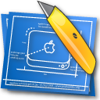
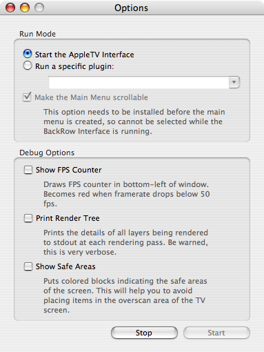
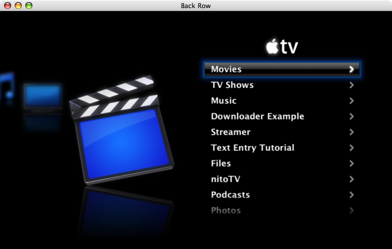

Introduction to the BDK
The BackRow Test application enables you to run the BackRow interface in a standard OS X window, and offers access to a few debugging options defined within the BackRow rendering interface.
BackRow Test Environment Options |
|
|  |
The Test Environment offers two run modes, either the full AppleTV interface or an interface limited to the appliance plugin of your choice. It also offers access to a number of useful profiling and debugging options within the BackRow rendering engine. |
BackRow Interface |
|
|  |
The BackRow window enables you to interact with your appliance plugin as if it were running on a real AppleTV. It can be controlled via an Apple Remote or through the keyboard, in the same manner as Front Row on a modern Macintosh. |